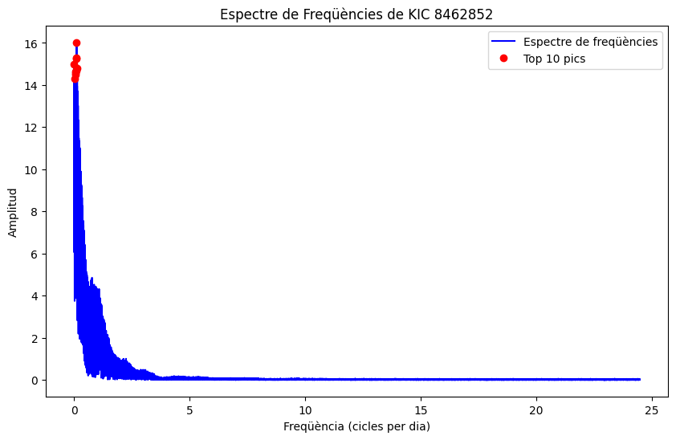

Anàlisi d'Estrelles
1. Corba de llum detrended (Corba de llum processada)
- Descripció: Aquest gràfic mostra la corba de llum de l'estrella després d'haver eliminat les tendències a llarg termini utilitzant un filtre Savitzky-Golay.
- Objectiu: Visualitzar la variabilitat intrínseca de la llum de l'estrella un cop s'han eliminat les tendències a llarg termini que podrien interferir amb l'anàlisi de les variacions més ràpides i subtils.
- Interpretació: Els punts del gràfic representen la lluminositat de l'estrella en funció del temps. Les variacions poden indicar diferents fenòmens astrofísics, com la presència de planetes, estrelles binàries o taques solars.
2. Espectre de freqüències (Transformada de Fourier)
- Descripció: Aquest gràfic mostra l'espectre de freqüències obtingut a partir de la transformada de Fourier aplicada a la corba de llum detrended.
- Objectiu: Identificar les freqüències dominants en la variació de la llum de l'estrella.
- Interpretació: Les freqüències altes representen variacions ràpides, mentre que les freqüències baixes representen variacions més lentes. Els pics més alts indiquen les freqüències amb les amplituds més grans, que són les més significatives en la variabilitat de la llum.
3. Espectre de freqüències amb els 10 pics més importants
- Descripció: Aquest gràfic és similar al segon, però amb els 10 pics més importants marcats en vermell.
- Objectiu: Destacar les freqüències més significatives trobades en l'espectre de freqüències.
- Interpretació: Els punts vermells representen les freqüències amb les amplituds més altes, indicant les variacions més importants en la llum de l'estrella. Això ajuda a identificar possibles períodes de rotació, cicles d'activitat estel·lar o la presència de planetes.
4. Periodograma Lomb-Scargle
- Descripció: Aquest gràfic mostra el periodograma Lomb-Scargle, que és una tècnica per detectar i caracteritzar els períodes en les dades irregularment mostrejades.
- Objectiu: Determinar els períodes dominants en la variació de la llum de l'estrella, especialment útil per identificar senyals periòdiques com les causades per exoplanetes.
- Interpretació: Els pics en el periodograma indiquen els períodes més probables de les variacions. Un pic alt en una certa freqüència (o període) suggereix un senyal periòdic fort, com el trànsit d'un exoplaneta o la rotació estel·lar.
5. Periodograma BLS (Box Least Squares) per a la detecció de transits d'exoplanetes
- Descripció: Aquest gràfic mostra el periodograma BLS, utilitzat per detectar transits d'exoplanetes. El gràfic inclou una línia vertical vermella que indica el període més probable.
- Objectiu: Identificar possibles transits d'exoplanetes a través de les caigudes periòdiques en la llum de l'estrella.
- Interpretació: Els pics en aquest periodograma representen els períodes on hi ha una major probabilitat de detectar un transit d'exoplaneta. El període més probable, indicat per la línia vermella, suggereix el temps entre transits consecutius, que pot utilitzar-se per calcular les característiques de l'exoplaneta, com el seu període orbital.
Exemples de la sortida per a KIC 8462852
1. Corba de llum detrended
- Gràfic: Es veu la variació de la lluminositat de l'estrella KIC 8462852 amb les tendències llargues eliminades.
2. Espectre de freqüències
- Gràfic: Es veu la distribució de les freqüències amb les seves respectives amplituds. Els pics més alts indiquen les freqüències dominants.

3. Espectre de freqüències amb els 10 pics més importants
- Gràfic: Similar a l'anterior, però amb els 10 pics més alts marcats en vermell per destacar les freqüències més significatives.
4. Periodograma Lomb-Scargle
- Gràfic: Es veu la potència de les diferents freqüències, destacant els períodes més probables de la variabilitat de la llum.
5. Periodograma BLS
- Gràfic: Es veu la potència dels diferents períodes, amb una línia vertical vermella que indica el període més probable per a un transit d'exoplaneta, suggerint la possible detecció d'un exoplaneta orbitant l'estrella KIC 8462852.